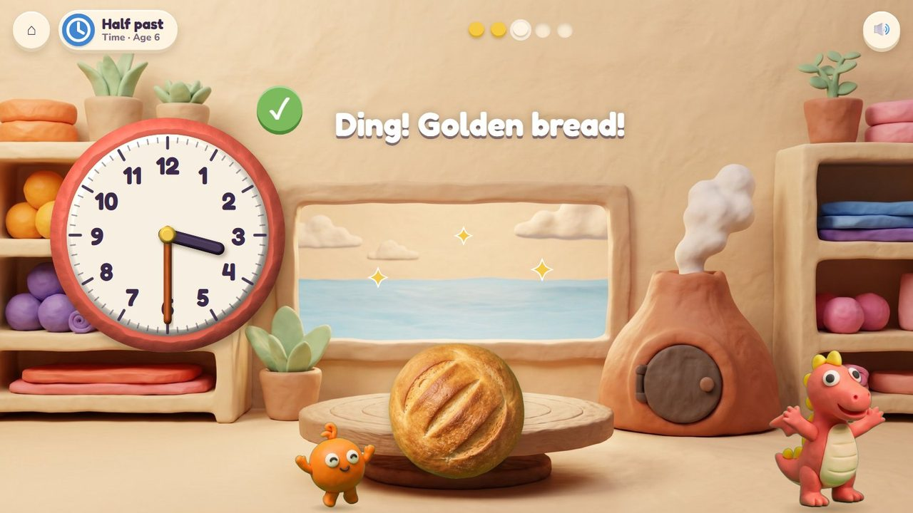
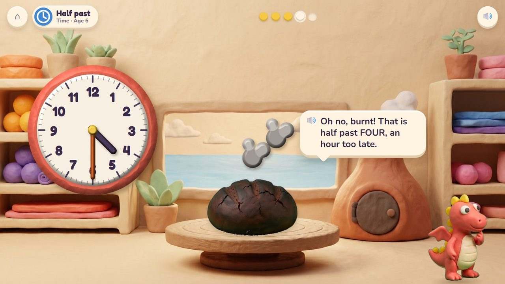
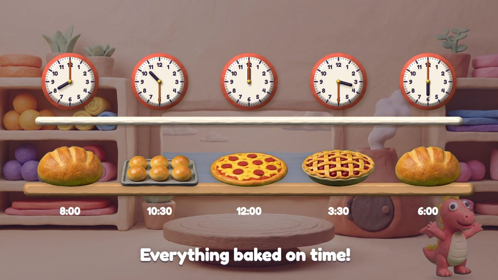
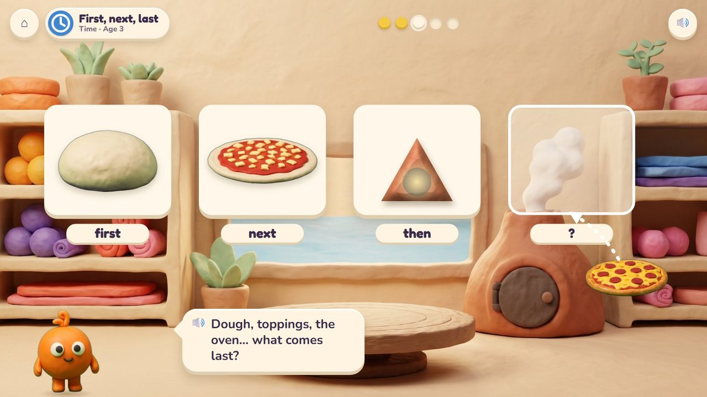

Baking Time
Bread and pizza come out golden only if the oven clock is right.
12 lessons (12 taught here first, the rest practised here) in 1 topics:
Time

The game
Fizz bakes with his own fire in Mumba's volcano oven. Friends order bread, pizza, buns and pies for set times, and the child turns the hands of the big clay clock to when each bake must come out; the hour hand moves with the minute hand like a real clock. On time, it comes out golden; too early, it is still pale dough; too late, it is burnt black. Little ones put the steps of baking in order (dough, toppings, oven, eat).
Hands-on
Turn the minute hand (or the hour hand); read the clock and type.
The end of a round
The day's bakes on a time line: everything baked on time.
How it plays
A storyboard of the game in one lesson, drawn from the app's own clay pictures.
1Pom's bread
The dough goes in; the order book says out at half past three.
🔊 “Into the oven it goes! Set the clock for when the bread comes out.”

2Turn the hand
The minute hand goes round to the 6; the little hand moves halfway to 4.

3Ding! Golden
On time: golden bread, and Pom is happy.

4Burnt!
Half past four, an hour too late: the bread is burnt black.
🔊 “Oh no, burnt! That is half past FOUR, an hour too late.”

5The quick round
When is the pizza ready? Read the clock, type 25. Timed.

6On time
The day's bakes on a time line.
The quick round (from age 6)
Read the oven clock and type the time (7 : 25), or how long a pizza baked. Ten questions at 6-7, a 60-second round from 8; your time and your best on screen; only right answers count; a miss shows the answer and comes back later. No clock under 6.
The same game, other lessons and ages
The badge at the top left says the topic, the lesson and the age.

7First, next, last · age 3
Dough, toppings, the oven… what comes last? A pizza!
From age 3 to 7
| Age 3Pre-school | First, next, last: dough, toppings, the oven, a pizza to eat; day and night. |
| Age 4Pre-K | Morning, afternoon and night (breakfast rolls, lunch pizza); before and after. |
| Age 5Kindergarten | Days of the week in the order book; today, yesterday and tomorrow. |
| Age 6Grade 1 | O'clock and half past; days, weeks and months. |
| Age 7Grade 2 | Five minutes at a time; quarter past and quarter to; a.m. and p.m. |
| Age 8 to 10Grades 3 to 5 | From Grade 3 these lessons are practice screens, not games. |
What changes from lesson to lesson
The hands
the hour hand only, then both; 5-minute steps, then every minute
The job
set a time, read a time, how long, the baking list
Help
the bake shows too early (pale) or too late (burnt); after a miss the hands move slowly to the right time
How you answer
turning the hands; the number pad for the quick round
Its 12 lessons
Age by age they are on the full list; here grouped by topic (the first activity named teaches a lesson, the others practise it).
Time 12
- First, next, last
early yearsBaking Time - Day and night
early yearsBaking Time - Morning, afternoon, night
early yearsBaking Time - Before and after
early yearsBaking Time - Days of the week
extraBaking Time - Today, yesterday, tomorrow
extraBaking Time - O'clock
1.MD.3Baking Time - Half past
1.MD.3Baking Time - Days, weeks and months
extraBaking Time - Five minutes at a time
2.MD.7Baking Time - Quarter past, quarter to
2.MD.7Baking Time - a.m. and p.m.
2.MD.7Baking Time
Questions
- Bread, pizza, buns and pies: which other bakes would children love?
- Anything in the storyboard to change (say the frame number)?